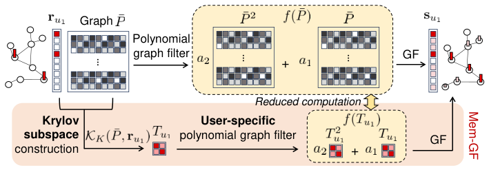
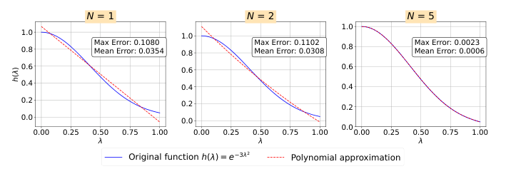

Memory Is No Longer a Bottleneck: Memory-Efficient Graph Filtering for Scalable Collaborative Filtering (内存不再是瓶颈：面向可扩展协同过滤的内存高效图滤波)
- 会议/期刊: IEEE Transactions on Knowledge and Data Engineering (TKDE, to appear)
- 作者与机构: Jin-Duk Park, Won-Yong Shin（延世大学数学与计算学院）
- 推荐链路定位: 召回（候选生成/打分，免训练 GF 模块）
- 研究方向: 协同过滤与双塔召回 / 图神经网络与知识图谱推荐
- 论文原文: https://arxiv.org/abs/2606.21540v1
- 开源代码: https://github.com/jindeok/Mem-GF
TL;DR (1分钟核心速览)
免训练图滤波 (GF) 类 CF 方法虽快，却必须显式构造并存储 \(|I|\times|I|\)的物品相似度图\(\tilde{P}=\bar{R}^\top\bar{R}\)，在 Amazon-book 上六种代表性方法全部 OOM。本文提出 Mem-GF：对每个用户信号\(r_u\)用 Lanczos 算法构造\(K\)维 Krylov 子空间\(K_K(\tilde{P},r_u)\)，把多项式滤波\(f(\tilde{P})r_u\)精确投影为\(f(T_u)\)上的\(K\times K\)小矩阵运算，全程不落地\(\tilde{P}\)。理论上证明\(N<K\)时零近似误差，空间/时间均对\(|I|\)、\(|U|\)、\(\mathrm{nnz}(R)\) 线性。在 Yelp/Amazon-book/ML-20M 上内存最多降 5.74×、预处理加速 4.38×、推理加速 26.2×，且 Recall@20/NDCG@20 全面超越 21 个基线。
Background & Motivation (背景与核心矛盾)
- 主流范式: 谱视角下 GCN 即"可学习图滤波器"，而 GF-CF/EASE/PGSP/Turbo-CF/HiGSP 等免训练方法用预定义滤波器（线性 LPF、理想 LPF、多项式 LPF）直接在物品相似度图上平滑用户交互信号，省去迭代训练。
- 前人局限: ① 所有方法共享一个用户无关 (user-agnostic) 的通用滤波器，维度恒为 \(|I|\times|I|\)，即使稀疏化/top-\(k\) 特征分解/多项式展开，滤波阶段仍依赖全尺寸相似度矩阵；② 为规避内存，多项式阶数被硬性限制在 3 阶以内，频率响应表达能力受限，无法逼近高斯等复杂滤波器。
- 核心洞察 (Key Insight): 真正被需要的只是 \(f(\tilde{P})r_u\)这一个向量，而非整个\(\tilde{P}\)。Krylov 子空间\(K_K(\tilde{P},r_u)=\mathrm{span}\{r_u,\tilde{P}r_u,\dots,\tilde{P}^{K-1}r_u\}\)恰好张成了多项式作用于\(r_u\)后所有可能的方向，且\(\tilde{P}Q_u=\bar{R}^\top(\bar{R}Q_u)\) 可用稀疏矩阵乘法"隐式"完成。
- 本文切入点: 把 Krylov 子空间从"计算加速技巧"升格为"滤波原理本身"——滤波器与信号都变成逐用户 (user-specific) 的，内存按 batch 分配、用完即释放。
Method (核心方法设计)
1. 整体框架 (Overall Architecture)
输入交互矩阵 \(R\)，先做度归一化\(\tilde{R}=D_U^{\gamma}RD_I^{1-\gamma}\)，再施加 Hadamard 幂\(\bar{R}=\tilde{R}^{\circ s}\)（注意：直接作用于\(\bar{R}\)而非\(\tilde{P}\)，这是避免显式存储的关键）。对每个用户\(u\)，以\(r_u\)为初始向量跑\(K\)步 Lanczos，得到正交基\(Q_u\in\mathbb{R}^{|I|\times K}\)与三对角矩阵\(T_u=Q_u^\top\tilde{P}Q_u\)；在\(K\times K\)的小空间内计算多项式\(f(T_u)=\sum_{n=0}^{N}a_nT_u^n\)，最后回投得到打分\(s_u=\|r_u\|_2Q_uf(T_u)e_1\)。全流程免训练，\((Q_u,T_u)\) 可预计算缓存，推理仅剩轻量矩阵乘法。
flowchart TD
A["交互矩阵 R"] --> B["度归一化 + Hadamard 幂: R̄"]
B --> C["逐用户 Lanczos 迭代<br/>隐式 P̃Q = R̄ᵀ(R̄Q)"]
C --> D["Krylov 基 Q_u + 三对角 T_u"]
D --> E["小空间多项式滤波 f(T_u)"]
E --> F["回投打分 s_u = ‖r_u‖₂ Q_u f(T_u) e₁"]
2. 关键设计拆解 (Key Designs)
-
逐用户 Krylov 投影滤波（核心算子）：痛点是用户无关的 \(|I|\times|I|\)滤波器无法扩展。Mem-GF 利用 Lanczos 初始化\(Q_u^\top r_u=\|r_u\|_2e_1\)，对任意\(N<K\) 的多项式有精确恒等式 $\(f(\tilde{P})r_u=\|r_u\|_2\,Q_u\Big(\sum_{n=0}^{N}a_nT_u^n\Big)e_1=\|r_u\|_2Q_uf(T_u)e_1 .\)$ 直觉：\(T_u\)是\(\tilde{P}\)在用户自身信号张成的子空间上的"压缩快照"，所有多项式作用都被无损搬进\(K\)维空间，\(\tilde{P}\) 从未被构造。
-
高阶多项式滤波器设计（Gaussian LPF）：痛点：传统方法因内存只能停在 3 阶，频率响应粗糙。Mem-GF 因 \(T_u\)仅\(K\times K\)，可廉价地算到 5 阶；通过非线性最小二乘拟合高斯响应\(h(\lambda)=e^{-\tau\lambda^2}\)（\(\tau=3\)），得到预定义 5 阶滤波器 $\(f(T_u)=8T_u+3.1T_u^2-11.2T_u^3+6.2T_u^4-1.1T_u^5 .\)$ 图 4 显示 \(N=5\)时最大误差 0.0023，比\(N=1,2\)（约 0.11）低两个数量级——这正是精度反超的物理来源。

- 训练目标、负采样与推理效率：无损失函数、无负采样、无训练（training-free），滤波器系数由 LS 数值求解一次性确定。空间复杂度 \(O(\mathrm{nnz}(R)+|I|K+K^2)\)（对比\(O(|I|^2)\)或\(\mathrm{nnz}(\tilde{P})\)），时间复杂度\(O(|U|K(\mathrm{nnz}(R)+|I|))\)，均线性。额外红利：一旦建好\((Q_u,T_u)\)，任意\(K'<K\)阶滤波器只需前\(K'\) 个基向量即可切换，验证集选滤波器几乎零成本。
Experimental Setup & Evaluation Protocol (实验设置与评估协议)
- 数据集与预处理:
| 数据集 | #Users | #Items | #Interactions | 密度 | 说明 |
|---|---|---|---|---|---|
| Yelp | 31,668 | 38,048 | 1,561,406 | 0.130% | 本地生活 |
| Amazon-book | 52,643 | 91,599 | 2,984,108 | 0.062% | 图书，物品数大 |
| ML-20M | 138,493 | 26,744 | 20,000,263 | 0.540% | 大规模，10-core 过滤 |
- 数据划分与防穿越: Yelp/Amazon-book 沿用 LightGCN/NGCF/PGSP/Turbo-CF 的公开划分与报告值以保证一致性；ML-20M 采用 80:20 比例划分，并从训练集再留 10% 作验证集，
10-core过滤。 - 排名评测协议: 采用文献通用的 top-20 全库排序（Recall@20、NDCG@20），确定性方法（含 Mem-GF）单次运行，其余取 10 次均值。
- 对比基线与超参: 21 个基线，覆盖 MF（BPR/NeuMF）、AE（Multi-VAE/RecVAE/SVD-AE）、GCN（NGCF/LightGCN/DGCF/SGL/SimpleX/SGDE）、生成式（DiffRec/L-DiffRec/FlowCF）、链接传播（LinkProp）与 GF（EASE/GF-CF/PGSP/FPSR/Turbo-CF/HiGSP）。Mem-GF 默认 \((\gamma,s,N)\)：Yelp\((0.55,0.9,5)\)、Amazon-book\((0.5,0.9,2)\)、ML-20M\((0.5,1.1,2)\)，统一取\(K=N+1\)；显著性\(p\le0.01\)。硬件：RTX A6000 48GB + 128GB RAM。
Key Experimental Results (实验关键数据)
1. 主实验对比 (Main Results)
| 方法 | Yelp R@20 | Yelp N@20 | Amazon R@20 | Amazon N@20 | ML-20M R@20 | ML-20M N@20 |
|---|---|---|---|---|---|---|
| LightGCN | 0.0649 | 0.0530 | 0.0411 | 0.0315 | 0.0402 | 0.1702 |
| SGL | 0.0675 | 0.0555 | 0.0478 | 0.0379 | 0.0388 | 0.1677 |
| SVD-AE | 0.0681 | 0.0572 | 0.0602 | 0.0479 | 0.0536 | 0.2379 |
| LinkProp-Multi | 0.0690 | 0.0571 | 0.0721 | 0.0588 | OOM | OOM |
| DiffRec | 0.0656 | 0.0552 | 0.0514 | 0.0418 | 0.0549 | 0.2258 |
| FlowCF | 0.0686 | 0.0587 | 0.0497 | 0.0431 | 0.0531 | 0.2340 |
| EASE | 0.0657 | 0.0552 | 0.0710 | 0.0567 | 0.0522 | 0.2264 |
| GF-CF | 0.0697 | 0.0571 | 0.0710 | 0.0584 | 0.0487 | 0.2076 |
| Turbo-CF | 0.0693 | 0.0574 | 0.0730 | 0.0611 | 0.0534 | 0.2299 |
| HiGSP | OOM | OOM | OOM | OOM | OOM | OOM |
| Mem-GF | 0.0705 | 0.0586 | 0.0753 | 0.0620 | 0.0566 | 0.2402 |
| Improv.% (vs 最优基线) | +0.7%¹ | +0.3%¹ | +3.2% | +1.5% | +3.1% | +1.0% |
¹ Yelp 上 Recall 略低于 PGSP (0.0710)，NDCG 略低于 FPSR (0.0584)，其余数据集全面最优。
效率对比（预处理，Amazon-book）：EASE/GF-CF/PGSP/HiGSP/FPSR/Turbo-CF 中多数 OOM；Mem-GF 一阶仅 5.1GB、五阶 8.0GB，对比次优者（Turbo-CF 45.7GB）内存降 5.74×、时间 6.6s vs 35.5s 加速 4.38×。推理（Yelp 单 batch）：Mem-GF 0.0044s / 0.57GB，对比 GF-CF 0.1197s / 28.79GB，加速 26.2×、显存降 >10.5×。vs 训练型：ML-20M 上 Mem-GF 102.2s，LightGCN 需 \(3.1\times10^5\)s。
2. 消融实验 (Ablation Study)
| 配置 | Yelp R@20 | Amazon R@20 | ML-20M R@20 | 说明 |
|---|---|---|---|---|
| Mem-GF-1 (\(K{=}2\)) | 0.0684 | 0.0710 | 0.0554 | 一阶线性 LPF |
| Mem-GF-2 (\(K{=}3\)) | 0.0692 | 0.0754 | 0.0566 | 二阶 LPF，Amazon/ML 最优 |
| Mem-GF-3 (\(K{=}4\)) | 0.0683 | 0.0707 | 0.0516 | 三阶逼近理想 LPF |
| Mem-GF-5 (\(K{=}6\)) | 0.0703 | 0.0739 | 0.0564 | 五阶高斯 LPF，Yelp 最优 |
| Mem-GF-\(k\)（去掉 Krylov，\(K{=}1\)） | 0.0035 | 0.0011 | 0.0248 | 性能崩塌，验证子空间必要性 |
3. 关键实验发现 (Key Findings)
- \(K=N+1\)是零误差的临界点，且实验完全吻合定理：表 VII 中当\(K\ge N+1\)时各阶滤波器 Recall 与完整 Mem-GF-\(k\)完全一致（如 Amazon 上 Mem-GF-2 在\(K{=}3\)起稳定于 0.0754），而\(K\le N\)的灰色区域性能剧烈抖动（Yelp Mem-GF-5 在\(K{=}2\) 时仅 0.0684 vs 0.0703），说明 Krylov 维度不是"越大越好"的玄学超参，而是有严格代数下界的可解释量。
- 精度增益来自"能负担得起的高阶滤波器"，而非内存节省本身：Amazon-book 上 Turbo-CF 因 OOM 被迫锁死一阶（0.0730），Mem-GF 可自由选二阶（0.0754，+3.2%）；Yelp 上五阶高斯滤波器（0.0705）优于一阶（0.0684），印证图 4 中 \(N=5\) 误差低两个数量级带来的频率响应保真度。
- 内存瓶颈的解除直接转化为规模可行性：Amazon-book 上 6/7 个 GF 基线 OOM，ML-20M 上多数方法因 GPU buffer OOM 退化到 CPU 导致 2735s–7432s 的预处理时间，而 Mem-GF 始终在 8GB 显存内完成，且图 5 显示内存/时间对 \(|U|,|I|,\mathrm{nnz}(R)\)均呈近线性增长，验证了\(O(\mathrm{nnz}(R)+|I|K+K^2)\) 的理论界。
Highlights & Limitations (亮点、对比与审稿批判)
- 与代表作对比 (vs. Prior Work): 与 Turbo-CF（同为多项式 GF）的本质区别是后者仍显式构造 \(\tilde{P}\)并受限于 3 阶，Mem-GF 把滤波搬进逐用户 Krylov 空间从而解锁高阶；与 GF-CF 的区别是后者依赖稠密理想 LPF 矩阵（\(|I|\times|I|\)，实践中超线性内存），Mem-GF 完全规避；与 LanczosNet 的区别是后者用 Krylov 做可学习 GNN 谱卷积，Mem-GF 是免训练 CF 且以内存效率为第一目标。
- 可迁移亮点: ① "只算 \(f(M)v\)不算\(M\)"的隐式算子思路可迁移到任何大规模图平滑/标签传播场景（如社交传播、KG 推理）；② 预计算\((Q_u,T_u)\) 后任意低阶滤波器零成本切换，天然适配逐用户个性化滤波器选择（不同用户最优滤波器差异大，见 PGSP/HiGSP 的动机）。
- 审稿级局限批判: ① 仅适用于由交互构造的对称物品相似度图，社交网络/知识图谱等异构结构需重新设计滤波器，且逐用户 Lanczos 的 \(|U|\)次串行循环在分布式部署时需额外工程（论文自认留作 future work）；② 极稀疏/冷启动用户信号会使 Krylov 子空间信息不足，精度退化，且高阶\(N\)在\(K\) 不足时有数值敏感性；③ 精度提升幅度在 Yelp 上仅 +0.3%~+0.7%，且未报告与 PGSP/FPSR 的显著性细节，收益主要仍体现在效率维度。
Rating (四维评分)
- 方法创新性 (Novelty): ⭐⭐⭐⭐ （核心机制与方法设计具备明确创新性，理论与实验动机支撑充分）
- 评估协议与实验扎实度 (Protocol & Experiments): ⭐⭐⭐⭐⭐ （主流公开数据集评测完整，包含多基线对比与消融实验验证）
- 写作与数学规范度 (Clarity & Rigor): ⭐⭐⭐⭐⭐ （问题形式化定义清晰，核心模块数学推导与架构阐述严谨易读）
- 工业落地与复现价值 (Industrial & Practical Value): ⭐⭐⭐⭐⭐ （兼顾推荐效果增益与训练/推理效率，具备实际场景迁移参考价值）